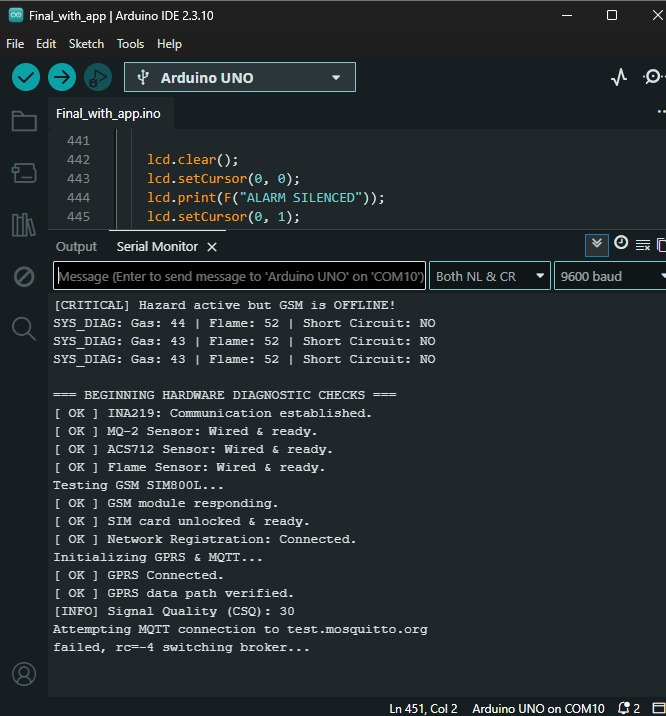
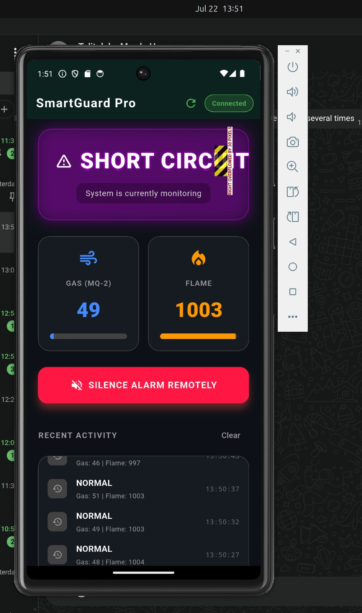

Group 2 Members
Gwaiffe Mark — 25/U/03372/EVE — 2500703372
Nassali Beatrice — 25/U/0352 — 2500700352
Talituleka Hope Mwelu — 25/U/03595/EVE — 2500703595
Ogesa Patrick Paul — 25/U/0353 — 2500700353
Muguluma Mark — 25/U/03459/PS — 2500703459
Problem
Conventional smoke and gas detectors only sound an alarm at the point of installation. If no one is home or within earshot when a gas leak, fire, or electrical short circuit occurs, the hazard can go unnoticed until serious damage or injury has already happened. This is a particular risk for households and small workplaces that are frequently left unattended, where a local-only alarm has no way of reaching anyone who could intervene in time.
Target users
Homeowners, renters, and small workshop or business owners who need to know about a hazard even when they are away from the installation site, and who want a way to verify and respond to an alert remotely rather than relying on a neighbour or passer-by to notice.
Project objectives
- Detect fire, gas/smoke, and short-circuit conditions in real time from onboard sensors.
- Alert occupants locally through an LCD readout and buzzer, and remotely through automatic SMS and a follow-up voice call.
- Stream live sensor telemetry over MQTT so a mobile app can monitor the system from anywhere.
- Let a user remotely silence the alarm from the mobile app once they've confirmed the situation.
- Stay connected during a network failure by falling back to a secondary MQTT broker.
Project requirements
| ID | Requirement |
|---|---|
| R1 | The system shall read gas concentration from the MQ-2 sensor and flag a hazard when it crosses the configured threshold. |
| R2 | The system shall read the flame sensor and current sensor (ACS712) to detect fire and abnormal current draw. |
| R3 | The system shall publish live telemetry (status, gas level, flame level, timestamp) over MQTT. |
| R4 | On a sustained hazard, the system shall send an SMS alert via GSM and place a voice call if the hazard persists. |
| R5 | The mobile app shall subscribe to alerts and display live gas/flame readings and a history of past events. |
| R6 | The mobile app shall allow a user to remotely silence the buzzer by publishing a command over MQTT. |
| R7 | The system shall display current status locally on a 16×2 LCD at all times. |
Project design
Sensors feed an Arduino, which decides locally whether there's a hazard, then fans out to three channels at once: an on-device alarm, a GSM emergency call/text, and a live MQTT feed the app subscribes to.
MQ-2 · Flame · ACS712
Gas, flame, current sampled every second.
Arduino Uno
Thresholds checked locally; hazard type classified.
LCD + Buzzer
On-site warning, always active.
SIM800L GSM
SMS immediately, call if sustained past 10s.
MQTT broker
JSON payload, falls back to a second broker.
Flutter app
Live gauges, history, remote silence command.
Results

Figure 1: Hardware setup with Arduino, sensors, and GSM module

Figure 2: Flutter mobile app displaying real-time sensor data
System Demonstration Video
Watch the complete system in action: sensor detection, local alarms, GSM alerts, and remote monitoring through the mobile app.
Conclusion
SmartGuard Pro was built and tested end-to-end: the Arduino firmware reads gas, flame, and current sensors, classifies hazards locally, drives the LCD and buzzer, sends GSM SMS/voice alerts, and publishes live telemetry over MQTT; the Flutter app subscribes to that feed, displays live readings and a history log, and can remotely silence an active alarm. The complete pipeline — sensing through to remote monitoring and control — is functional.
Future work
Planned improvements include battery/solar backup power for outages, encrypted MQTT (TLS) for secure telemetry, support for multiple installation sites within one app, voice integration into the GSM and additional sensor types (e.g. carbon monoxide) to widen hazard coverage.